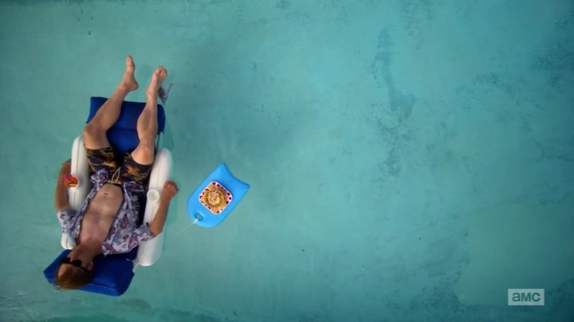
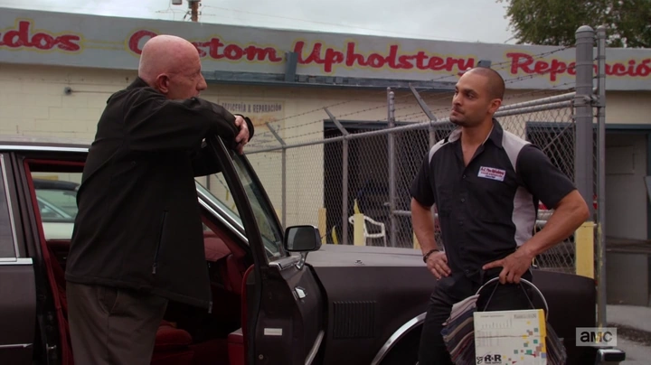
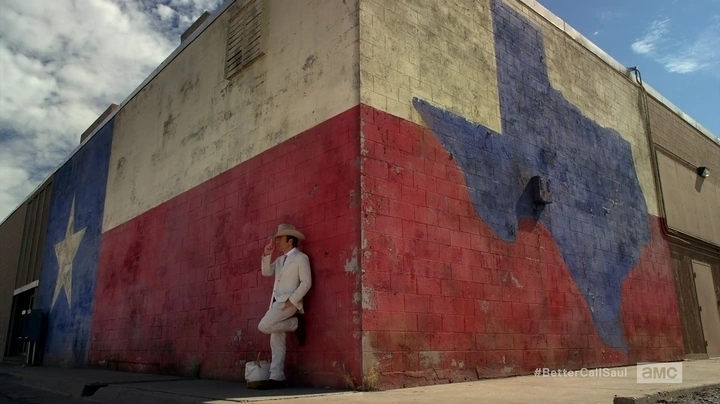
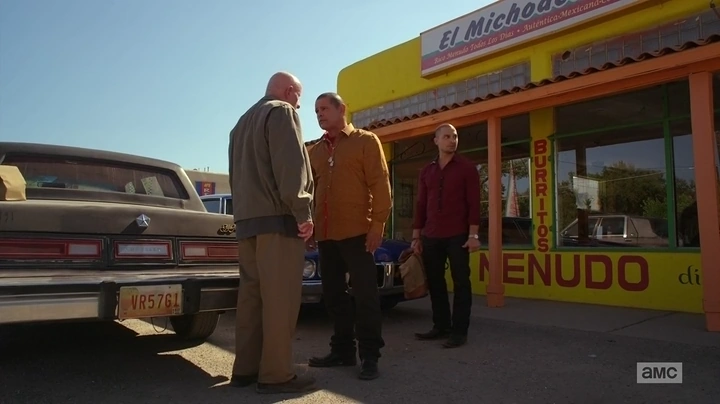
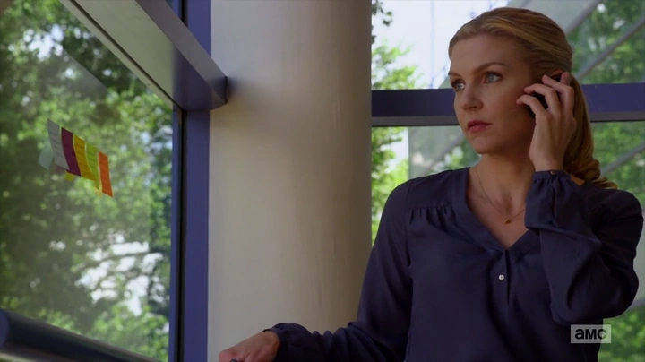
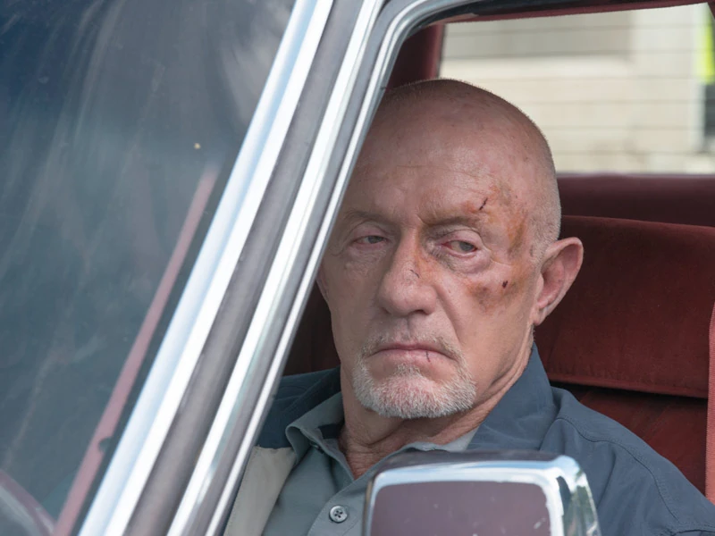
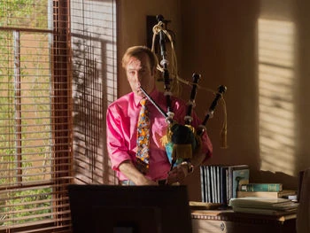
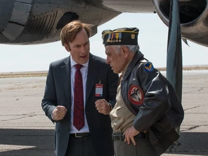
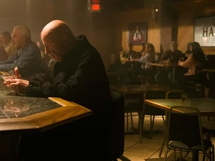
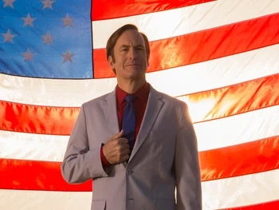

| Episodi 01 — Switch |
En Jimmy adopta una nova actitud despreocupada: estafa amb la Kim i finalment accepta la feina a Davis & Main; en Mike rebutja el pla d’en Nacho contra en Hector. |
 |
| Episodi 02 — Cobbler |
En Jimmy s’inventa una història esbojarrada per salvar en Pryce d’un embolic amb la policia, mentre en Chuck torna a escena i la Kim afronta les conseqüències. |
 |
| Episodi 03 — Amarillo |
Per impulsar Sandpiper, en Jimmy grava un anunci de TV després de captar clients a Amarillo i aconsegueix resultats… però atrau l’escrutini d’en Chuck i d’HHM. |
 |
| Episodi 04 — Gloves Off |
L’ Mike orquestra una baralla calculada que envia en Tuco a la presó amb danys mínims, mentre l’anunci d’en Jimmy li costa car a la Kim a HHM. |
 |
| Episodi 05 — Rebecca |
Flashbacks revelen el passat d’en Chuck amb la Rebecca; al present, la Kim queda encallada i en Chuck els va minant silenciosament. |
 |
| Episodi 06 — Bali Ha’i |
La Kim valora una oferta de Schweikart & Cokely mentre en Jimmy es resisteix a acomodar-se; en Hector pressiona l’ Mike perquè confessi per en Tuco. |
 |
| Episodi 07 — Inflatable |
Després d’una epifania “inflable”, en Jimmy força el seu acomiadament, es posa el seu primer vestit estrident i traça amb la Kim un pla de despeses compartides. |
 |
| Episodi 08 — Fifi |
En Jimmy prepara un anunci d’una sola presa i ajuda la Kim a captar Mesa Verde, fins i tot falsificant documents per perjudicar en Chuck; l’ Mike planeja un cop. |
 |
| Episodi 09 — Nailed |
L’ Mike fa una emboscada amb una tira de claus a una ruta de diners dels Salamanca, i en Chuck destapa les falsificacions d’en Jimmy davant la Kim. |
 |
| Episodi 10 — Klick |
En Jimmy acudeix a l’hospitalitzat Chuck i confessa la seva falsificació sense saber que el grava; al desert, el pla de franctirador de l’ Mike queda aturat per un avís. |
 |